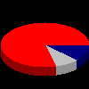

(PHP 4 >= 4.0.6, PHP 5, PHP 7, PHP 8)
imagefilledarc — 绘制部分弧形并填充
$image,$center_x,$center_y,$width,$height,$start_angle,$end_angle,$color,$style
在指定 image 中以指定坐标为中心绘制部分弧形。
image由图象创建函数(例如imagecreatetruecolor())返回的 GdImage 对象。
center_x中间的 x 坐标。
center_y中间的 y 坐标。
width弧形宽度。
height弧形高度。
start_angle弧形起始角，以度为单位。
end_angle弧形结束角度，以度为单位。0° 位于三点钟位置，顺时针绘制弧形。
color颜色标识符使用 imagecolorallocate() 创建。
style值可以是下列值的按位或（OR）：
IMG_ARC_PIE 和 IMG_ARC_CHORD
是互斥的；IMG_ARC_CHORD
只是用直线连接了起始和结束点，IMG_ARC_PIE
则产生圆形边界。IMG_ARC_NOFILL
指明弧或弦只有轮廓，不填充。IMG_ARC_EDGED
指明用直线将起始和结束点与中心点相连，和 IMG_ARC_NOFILL
一起使用是画饼状图轮廓的好方法（而不用填充）。
总是返回 true。
示例 #1 创建 3D 外观的饼图
<?php
// 创建图像
$image = imagecreatetruecolor(100, 100);
// 分配一些颜色
$white = imagecolorallocate($image, 0xFF, 0xFF, 0xFF);
$gray = imagecolorallocate($image, 0xC0, 0xC0, 0xC0);
$darkgray = imagecolorallocate($image, 0x90, 0x90, 0x90);
$navy = imagecolorallocate($image, 0x00, 0x00, 0x80);
$darknavy = imagecolorallocate($image, 0x00, 0x00, 0x50);
$red = imagecolorallocate($image, 0xFF, 0x00, 0x00);
$darkred = imagecolorallocate($image, 0x90, 0x00, 0x00);
// 创建 3D 效果
for ($i = 60; $i > 50; $i--) {
imagefilledarc($image, 50, $i, 100, 50, 0, 45, $darknavy, IMG_ARC_PIE);
imagefilledarc($image, 50, $i, 100, 50, 45, 75 , $darkgray, IMG_ARC_PIE);
imagefilledarc($image, 50, $i, 100, 50, 75, 360 , $darkred, IMG_ARC_PIE);
}
imagefilledarc($image, 50, 50, 100, 50, 0, 45, $navy, IMG_ARC_PIE);
imagefilledarc($image, 50, 50, 100, 50, 45, 75 , $gray, IMG_ARC_PIE);
imagefilledarc($image, 50, 50, 100, 50, 75, 360 , $red, IMG_ARC_PIE);
// 输出图像
header('Content-type: image/png');
imagepng($image);
?>以上示例的输出类似于：
